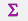
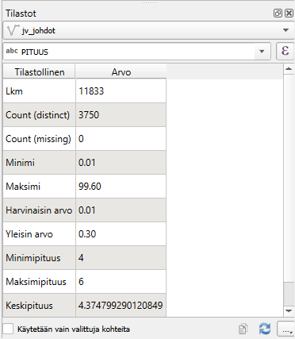
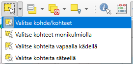
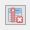
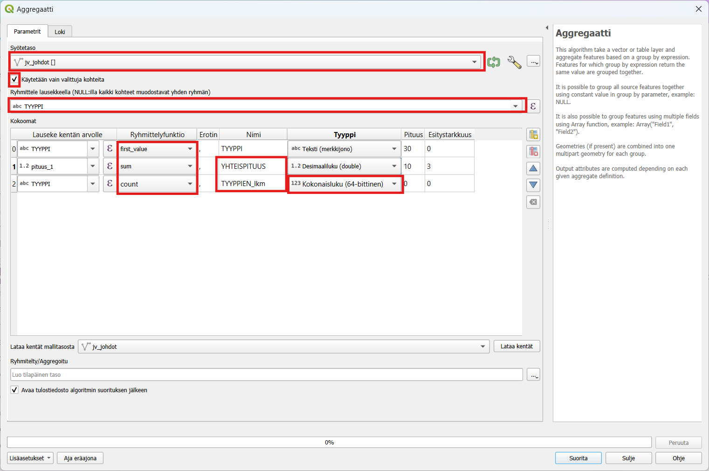
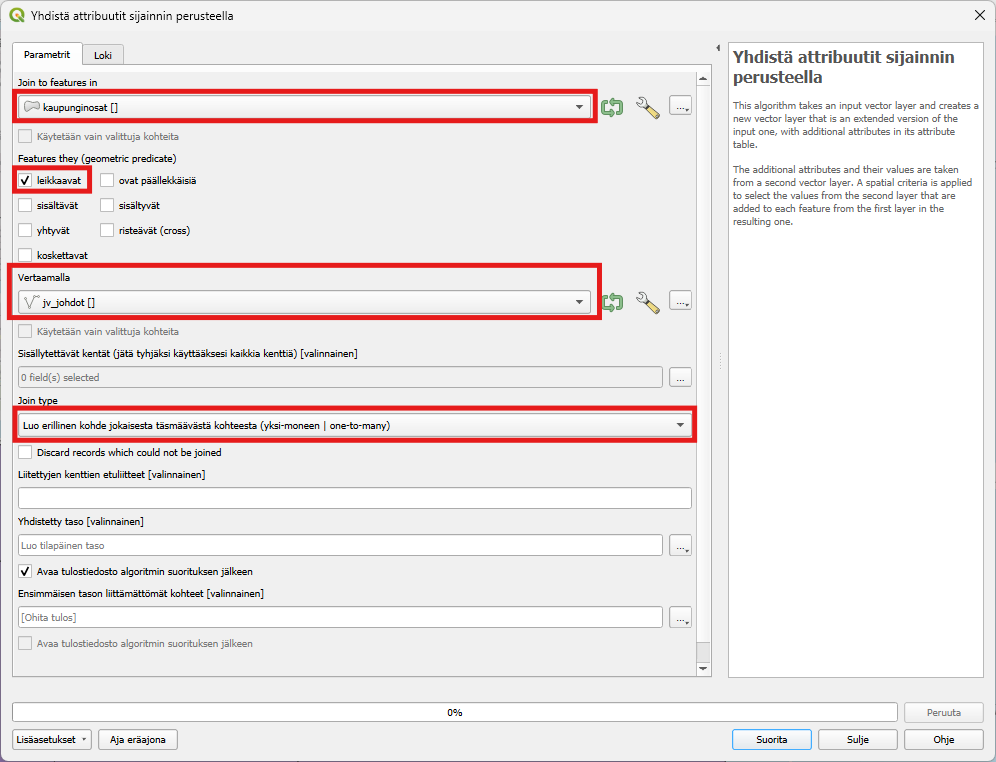
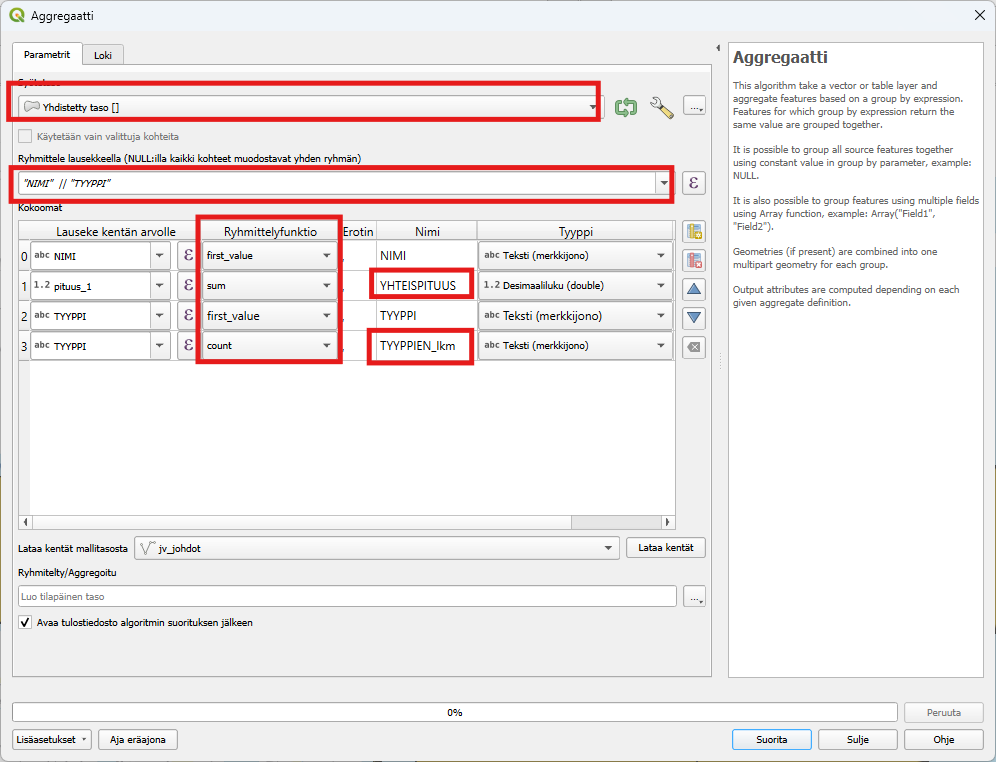
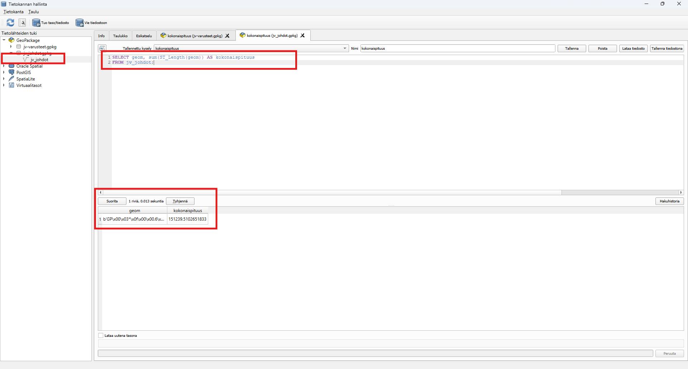

Harjoitus 8: SQL-kyselyt
Harjoituksen sisältö
Harjoituksessa harjoitellaan SQL-kyselyiden tekemistä aineistoilla
Harjoituksen tavoite
Koulutettava oppii SQL-kyselyiden luonnin
Valmistautuminen
Käynnistä QGIS-ohjelmisto. Avaa uusi QGIS-projekti ja tallenna se nimellä (Projekti → Tallenna nimellä…) “QGIS_harjoitus_8”.
Lisää projektiin seuraavat aineistot:
- …/jv-johdot.TAB
- …/kaupunginosat.TAB
- …/viemäripiirit.TAB (jos haluat käyttää tätä lakusissa kaupnginosien sijaan)
Tilastot
Avaa projektiisi jv-johdot.TAB ja muunnetaan se harjoituksen aluksi GeoPackageksi. Tämä varmistaa sen, että saamme laskettua alueellisia summia ja tehtyä SQL-kyselyitä. Klikkaa Tasot-luettelossa jv-johdot tasoa hiiren oikealla ja valitse Vie > Tallenna kohteet nimellä. Anna Tiedostomuodon olla GeoPackage. Valitse Tiedostonimeksi jvjohdot ja Tason nimeksi jvjohdot. Vaihda koordinaattijärjestelmäksi Ennalta määritelty koordinaattijärjestelmä ja valitse ETR89/GK27FIN (EPSG:3881). Tallenuksen jälkeen taso ilmestyy Tasot-paneeliin. Poista alkuperäinen jv-johdot.TAB painamalla tasoa hiiren oikealla ja valitsemalla Poista taso. Varmista vielä, että projektille on määritetty koordinaatistoksi ETR89/GK27FIN (EPSG:3881). Voit tehdä sen esim. Projekti > Ominaisuudet > Koordinaatijärjestelmä tai QGISin oikean alalaidan kuvakkeen kautta.
Tehdään vielä alkuvalmisteluina muutos ominaisuustietotauluun. Alkuperäisessä aineistossa pituustieto oli tekstimuodossa, joka estää laskuoperaatioiden tekemisen. Mene Tason ominaisuudet > Tietokentät ja poista sarake Pituus aktivoimalla muokkaus kynäkuvakkeesta ja valitsemalla Poista kenttä. Paina Uusi kenttä ja anna Nimeksi Pituus ja Tyypiksi Desimaalinumero. Laske tämän jälkeen pituudet Kentän arvojen laskin -työkalulla kuten tehtiin Digitointiharjoituksessa.
Tutkitaan seuraavaksi tasoa QGISin tilastot-paneelissa, jossa voit tarkastella aineistosi arvojen tilastollista jakaumaa. Saat Tilastot-paneelin näkyviin QGISin käyttöliittymään klikkaamalla Näytä tilastollinen yhteenveto -painiketta  tai valitsemalla päävalikosta Näytä > Paneelit > Tilastot. Avautuvassa ikkunassa valitse pudotusvalikosta jvjohdot-taso ja sen jälkeen yksi tason attribuuttikenttä. Tarkastele esitettäviä tilastollisia tunnuslukuja. Voit myös valita aineistosta vain osan, jonka tilastoja haluat tarkastella. Valitse osa aineiston ruuduista joko kartalta tai attribuuttitaulusta, ja klikkaa Tilastot-paneelin ruutu Käytetään vain valittuja kohteita aktiiviseksi.

Alueellisten summien laskeminen ja aggregointi
Erilaisia paikkatietoaineistoja pitää välillä yhdistää ominaisuuksiensa tai sijainnin perusteella. Tässä harjoituksessa tutustuaan, miten ominaisuustietoja voidaan yhdistää eri tavoin.
Aggregointi
Valitse sopiva valintatyökalun asetus:

ja tee valintatyökaluilla valinta halutulta alueelta.
Aggregoimalla voidaan yhdistää sarakkeita jonkin ominaisuustiedon perusteella ja päättää, miten muut sarakkeet yhdistyvät toisiinsa. Etsi Prosessointityökaluista Aggregaatti. Valitse syötetasoksi jvjohdot, laita valintapäälle “Käytetään vain valittuja kohteita” ja ryhmittelylauseeksi "TYYPPI". Kokoomat-lehdellä on kaikki aineiston sarakkeet ja voit valita miten sarakkeet yhdistyvät toisiinsa. Poista kaikki ylimääräiset sarakkeet valitsemalla esimerkiksi CTRL-pohjassa sarakkeet ja painamalla  nappia. Jätä näkyviin vain TYYPPI ja pituus. Lisää tämän jälkeen vielä toinen TYYPPI sarake. Määrittele seuraavat ryhmittelyfunktiot:
TYYPPI –> first_value
pituus –> sum
TYYPPI –> count
Vaihda tämän jälkeen vielä pituus sarakkeen nimeksi “YHTEISPITUUS” ja TYYPPI - count sarakkeen nimeksi “TYYPPIEN_lkm”

Paina vielä Suorita. Ajossa kestää hetki ja uusi Aggregated-taso ilmestyy projektiisi. Avaa tason attribuuttitaulukko. Jokaisella osa-alueella on summattuna alueella olevien jvjohtojen lukumäärä tyypeittäin. Voit visualisoida aineiston esimerkiksi valitsemalla kuvaustekniikaksi porrastettu ja etsimällä aineistoon sopivat luokkavälit.
Alueellisten summien laskeminen
Harjoituksessa käytetään Kuopion kaupungin kaupunginosat- tasoa (kaupunginosat.TAB) ja lasketaan, kuinka paljon jvjohtoja on eri Kuopion osa-alueilla.
Voit myös tehdä harjoituksen myös muulla aluejaolla esimerkiksi viemäripiirit tasolla.
Liitetään tieto jv-johdoista Kuopion kaupunginosa jakoon sijainnin perusteella. Avaa Vektori -> Tiedonhallinta -> Yhdistä attribuutit sijainnin perusteella. Valitse yhdistettäväksi tasoksi kaupungingosat ja vertailukohteeksi jvjohdot. Jätä Säilytettävät kentät tyhjäksi niin kaikki jv-johdot-tason sarakkeet lisätään. Tarkista vielä, että Join type on Luo erillinen kohde jokaisesta täsmäävästä kohteesta (yksi-moneen) , jotta jokainen piste huomiodaan uudessa tasossa.

Paina Suorita. Tasoluetteloon pitäisi tulla uusi taso nimeltään “Yhdistetty taso”. Voit tarkistaa onko yhdistys tehty oikein tarkistamalla kohteiden lukumäärän. Klikkaa tasoa hiiren oikealla ja valitse “Näytä kohteiden lukumäärä” -täppä aktiiviseksi. Tee sama jvjohdot -tasolle. Jos lukumäärä on lähes sama, yhdistys on onnistunut! (muutama kohde on kaupungosa-alueiden ulkopuolella). Attribuuttitaulukossa on sarake kaikista kaupunginosista muiden attribuuttien lisäksi.
Seuraavaksi tasot yhdistetään osa-alueittain aggregoimalla taso kaupunginosajaon ja johdon tyypin mukaisesti. Aggregoimalla voidaan yhdistää sarakkeita jonkin ominaisuustiedon perusteella ja päättää, miten muut sarakkeet yhdistyvät toisiinsa. Etsi Prosessointityökaluista Aggregaatti. Valitse syötetasoksi aiemmin tehty Yhdistetty taso, ryhmittelylauseeksi "NIMI" || "TYYPPI" (eli siis kokoamme yhteen sekä kaupunginosa nimen perusteella että johdon tyypin). Kokoomat-lehdellä on kaikki aineiston sarakkeet ja voit valita miten sarakkeet yhdistyvät toisiinsa. Poista kaikki ylimääräiset sarakkeet ja jätä näkyviin vain NIMI, pituus, TYYPPI. Lisää tämän jälkeen vielä toinen TYYPPI sarake. Määrittele seuraavat ryhmittelyfunktiot:
NIMI –> first_value
pituus –> sum
TYYPPI –> first_value
TYYPPI –> count
Vaihda tämän jälkeen vielä pituus sarakkeen nimeksi “YHTEISPITUUS” ja TYYPPI - count sarakkeen nimeksi “TYYPPIEN_lkm”

Paina vielä Suorita. Ajossa kestää hetki ja uusi Aggregated-taso ilmestyy projektiisi. Avaa tason attribuuttitaulukko. Jokaisella osa-alueella on summattuna alueella olevien jv-johtojen lukumäärä tyypeittäin. Voit visualisoida aineiston esimerkiksi valitsemalla kuvaustekniikaksi porrastettu ja etsimällä aineistoon sopivat luokkavälit.
Lisätehtävä: Summien laskeminen SQL-lausekkeilla
QGIS mahdollistaa SQL-kyselyiden tekemisen suoraan aineistoihin, kuten PostGIS-tietokantoihin tai paikallisiin tiedostoihin (esim. GeoPackage). Tässä ohjeet, miten voit tehdä SQL-kyselyitä QGIS:llä:
1. Valmistaudu SQL-kyselyihin
Tarkista, että aineisto tukee SQL-kyselyitä
PostGIS-tietokanta: Voit käyttää SQL:ää suoraan, kun olet yhdistänyt QGIS:n PostGIS-tietokantaan.
GeoPackage-tiedosto: GeoPackage-tiedostot tukevat SQL:ää.
Shapefile: Shapefile ei tue suoria SQL-kyselyitä; muunna se ensin sopivampaan muotoon, kuten GeoPackage.
MapInfo-tiedostot kuten TAB: eivät tue suoria SQL-kyselyitä; muunna se ensin sopivampaan muotoon, kuten GeoPackage.
2. Avaa Tietokannan hallinta (“DB Manager”)
DB Manager on QGIS:n työkalu, jonka avulla voit tehdä SQL-kyselyitä:
Avaa Tietokannan hallinta (DB Manager):
- Valikko: Tietokanta -> Tietokannan hallinta.
Valitse tietolähde:
- Jos käytät GeoPackage-tiedostoa, valitse tiedosto paikallisista tietolähteistä.
3. Kirjoita SQL-kysely
Klikkaa tietokannan nimeä ja valitse SQL-kysely (Query).
Kirjoita SQL-koodi editoriin:
SELECT geom, sum(ST_Length(geom)) AS kokonaispituus
FROM jvjohdot;

Suorita kysely:
- Klikkaa Suorita kysely (Execute).
Tässä myös muita SQL-lauseita:
Lukumäärien laskenta:
SELECT TYYPPI, COUNT(*) AS lukumäärä
FROM jvjohdot
GROUP BY TYYPPI;
Lukumäärät, josta betoni materiaali ja omistaja Kuopion Vesi:
SELECT TYYPPI, COUNT(*) AS lukumäärä
FROM jvjohdot
where OMISTAJA IS “Kuopion Vesi” AND MATERIAALI IS “BET”
GROUP BY TYYPPI;
SQL-kyselyt suoraan QGIS:n tasoille
Jos haluat tehdä SQL-kyselyitä ilman DB Manageria, voit käyttää suodattimia
a) Käytä Suodatinta (Filter):
Valitse taso, jolle haluat tehdä kyselyn ja klikkaa sitä hiiren oikealla → Suodatin.
Kirjoita yksinkertainen kysely, esimerkiksi:
“TYYPPI” = ‘Keräilyviemäri, digit. - Jäte’
TAI:
“TYYPPI” = ‘Keräilyviemäri, digit. - Jäte’ AND “OMISTAJA” = ‘Kuopion Vesi’
Klikkaa OK.
Hyviä käytäntöjä SQL-kyselyissä
Projektio: Varmista, että käytät oikeita koordinaattijärjestelmiä erityisesti geometriakyselyissä.
Optimoitu kysely: Suuren tietoaineiston käsittely voi olla hidasta, joten käytä suodattimia (esim.
WHERE) tarpeettomien rivien rajaamiseksi.Testaa kyselyt pienemmässä mittakaavassa: Varmista, että kysely toimii ennen kuin suoritat sen koko tietoaineistolle.